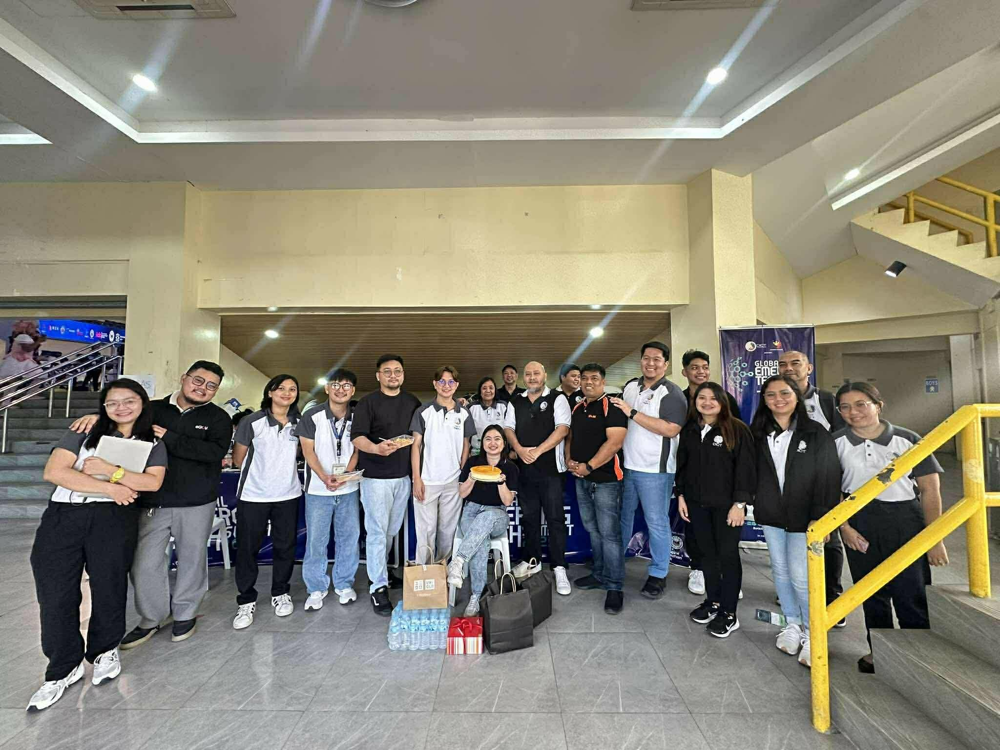
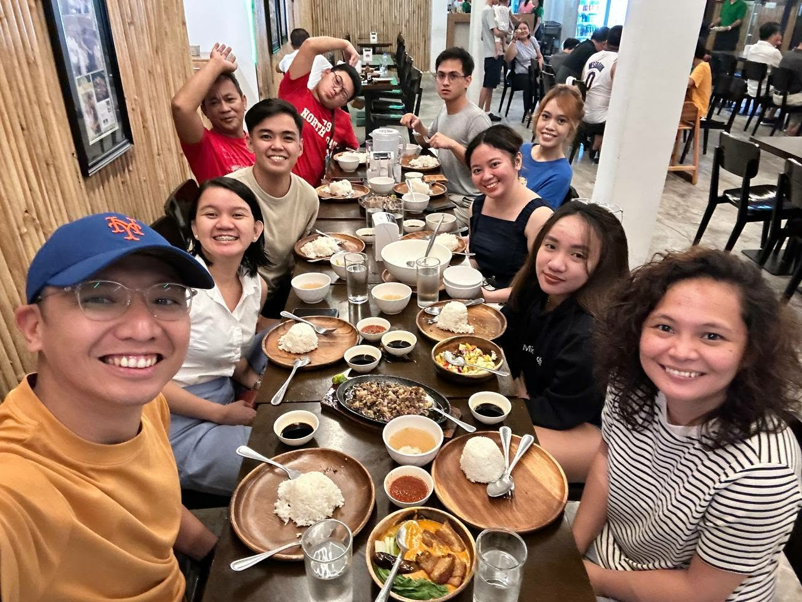
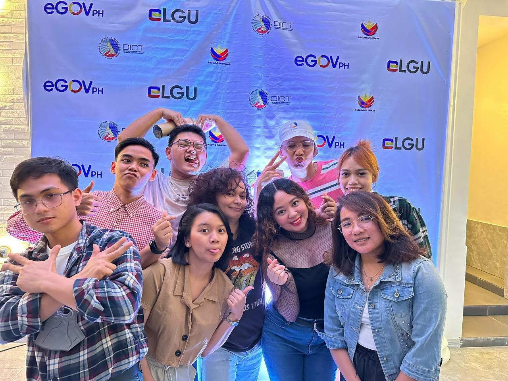

Renaissance · Research & Public Conversation · Case
Coordinating Digital Government Before It Scales
Leading the organization of a national BPLS planning and coordination activity taught me that digital government is not only a systems problem. Before systems can work together, people and institutions have to learn how to coordinate.
Year: 2023
Why this case matters
Interoperability begins before systems talk to each other. It begins when people do.
In October 2023, I led the organization of the BPLS Year-end Assessment and Coordination Planning activity for the DICT's Digital Government-eGovernment Systems and Development Program.
My responsibility included the fund downloading to regional offices, which placed me close to both the administrative and operational sides of the event. I worked closely with the DICT Region 3 eGov team to turn the national activity into something that could actually run.
The theme was already provided: E-Governance: Citizen-centric, Digitally-empowered LGUs. From that theme, I constructed the program and helped shape the flow of the four-day activity.
Documentary record
The event was national. The work behind it was deeply collaborative.
October 18–21, 2023 · Hotel Seoul, Clark Freeport Zone, Mabalacat City, Pampanga.




Case record
A national activity built through distributed responsibility.
- Role
- Lead organizer; fund downloading and national coordination
- Collaborating team
- DICT Region 3 eGov team
- National team
- DICT Central Office eGov team
- Event
- BPLS Year-end Assessment and Coordination Planning
- Theme
- E-Governance: Citizen-centric, Digitally-empowered LGUs
- Dates
- October 18–21, 2023
- Venue
- Hotel Seoul, Clark Freeport Zone, Mabalacat City, Pampanga
- Delegations
- Participants coordinated across 17 regional offices
The work behind the room
A national event is experienced in one place, but it is organized across many places at once.
Much of the work happened before participants entered the venue. Constant communication with the Region 3 eGov team connected the national program with the details required on the ground.
That meant coordinating transportation procurement, hotel rooms, room assignments, participant movement, and the needs of delegations coming from all 17 regional offices.
The Central Office eGov team carried the national program while Region 3 helped make the local staging work. The event only became coherent because those responsibilities were connected through continuous coordination.
No single person could have carried those moving parts alone. The activity worked because responsibilities were shared, updates were communicated, and people remained committed to solving the next operational problem together.
Program design
A theme becomes useful only when it can be translated into a sequence of conversations.
The theme, E-Governance: Citizen-centric, Digitally-empowered LGUs, gave the activity its direction. My task was to construct a program that could carry that direction through the actual experience of the assembly.
That required thinking about sequence: what participants needed to understand first, which discussions depended on earlier ones, where assessment needed to lead into planning, and how the program could move from looking back at implementation to coordinating what came next.
I learned that program design is a form of facilitation before the facilitation begins. The agenda determines which questions meet each other, which voices enter the room at what point, and whether the activity feels like a collection of presentations or a conversation with direction.
Stewardship
Public resources change the standard for what “good enough” should mean.
Handling funds and coordinating the logistics also changed how I thought about event quality. The resources behind the activity were public resources. That made careful planning, communication, and execution more than matters of professionalism.
For me, the standard was simple: the event should be worthy of the public money used to make it possible.
That did not mean making the activity extravagant. It meant reducing avoidable confusion, using resources deliberately, respecting the time of participants, and making sure the event could produce something useful beyond the event itself.
Renaissance
Technology can connect systems. Coordination connects the people responsible for making those systems work.
The activity reminded me that digital transformation is not only visible in platforms, portals, and interfaces.
It is also present in the less visible work of aligning people, budgets, logistics, expectations, and responsibilities before a system can scale across different offices and local realities.
What I carry forward
Coordination is not the work around the work. It is part of the work itself.
I entered the activity thinking about program flow, funding, participants, rooms, buses, schedules, and regional requirements. I left with a clearer understanding of how much institutional work depends on relationships that can sustain constant communication.
The success of the activity was not evidence that one person managed every detail. It was evidence that people across offices were willing to carry different parts of the same commitment.
That is the part of digital government I continue to find important: systems may create the infrastructure, but collaboration is what lets people use that infrastructure coherently.
Creativity → Renaissance
Return to Research & Public Conversation.
Explore more cases about inquiry, coordination, evidence, interpretation, and what happens when national ideas meet the people and institutions responsible for making them work.
Research & Public Conversation →